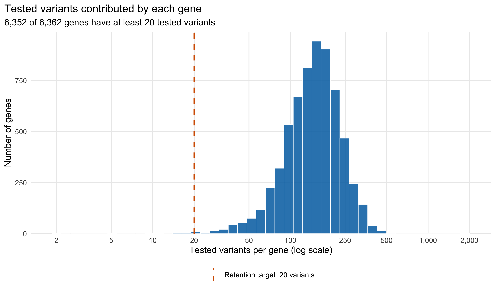
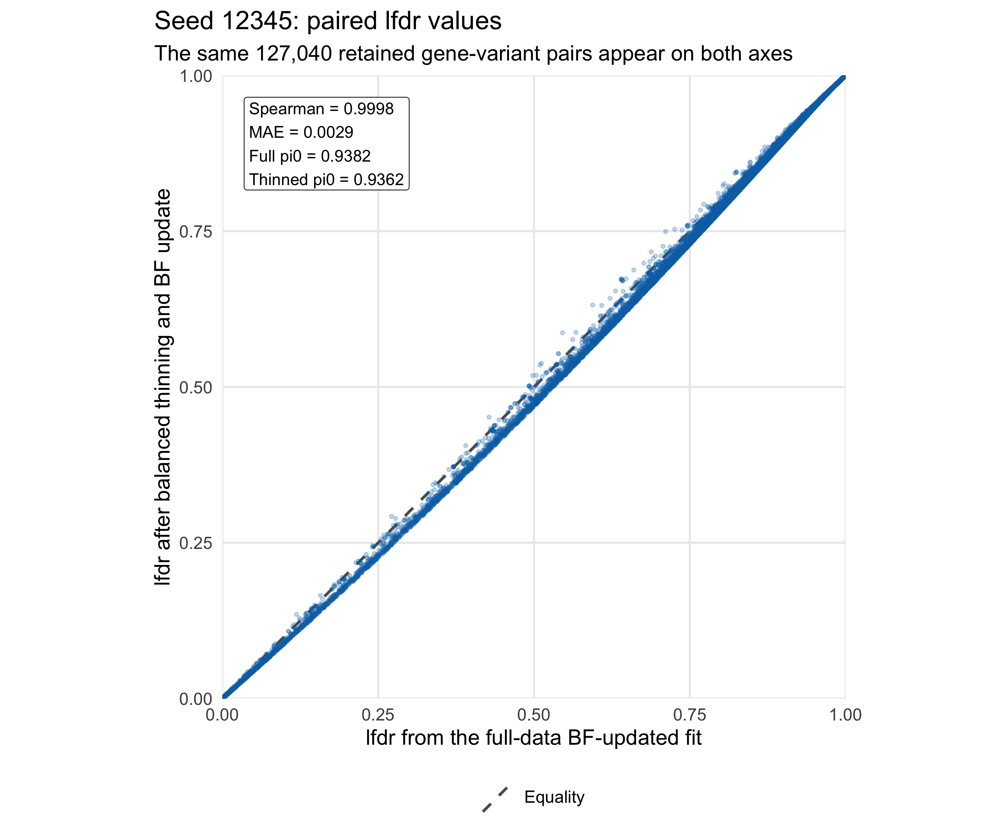
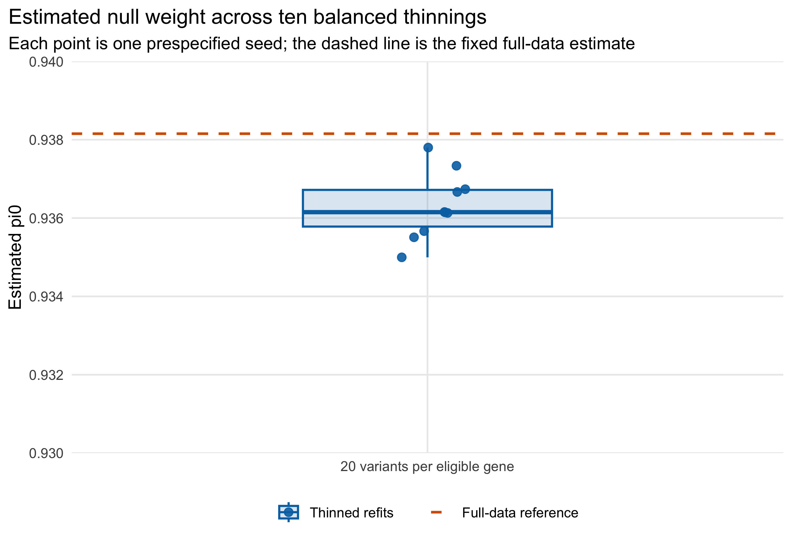
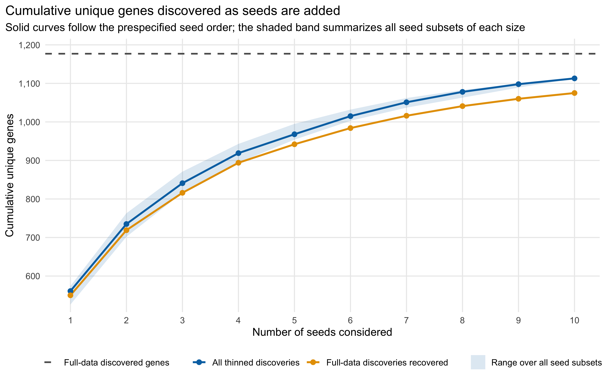

Internal sensitivity analysis: 20 random variants per eligible gene
Ziang Zhang
2026-08-07
Last updated: 2026-08-19
Checks: 6 1
Knit directory: coderepo-local/
This reproducible R Markdown analysis was created with workflowr (version 1.7.2). The Checks tab describes the reproducibility checks that were applied when the results were created. The Past versions tab lists the development history.
The R Markdown is untracked by Git. To know which version of the R
Markdown file created these results, you’ll want to first commit it to
the Git repo. If you’re still working on the analysis, you can ignore
this warning. When you’re finished, you can run
wflow_publish to commit the R Markdown file and build the
HTML.
Great job! The global environment was empty. Objects defined in the global environment can affect the analysis in your R Markdown file in unknown ways. For reproduciblity it’s best to always run the code in an empty environment.
The command set.seed(20251109) was run prior to running
the code in the R Markdown file. Setting a seed ensures that any results
that rely on randomness, e.g. subsampling or permutations, are
reproducible.
Great job! Recording the operating system, R version, and package versions is critical for reproducibility.
Nice! There were no cached chunks for this analysis, so you can be confident that you successfully produced the results during this run.
Great job! Using relative paths to the files within your workflowr project makes it easier to run your code on other machines.
Great! You are using Git for version control. Tracking code development and connecting the code version to the results is critical for reproducibility.
The results in this page were generated with repository version c87957a. See the Past versions tab to see a history of the changes made to the R Markdown and HTML files.
Note that you need to be careful to ensure that all relevant files for
the analysis have been committed to Git prior to generating the results
(you can use wflow_publish or
wflow_git_commit). workflowr only checks the R Markdown
file, but you know if there are other scripts or data files that it
depends on. Below is the status of the Git repository when the results
were generated:
Ignored files:
Ignored: .DS_Store
Ignored: .Rhistory
Ignored: .Rproj.user/
Ignored: Rplots.pdf
Ignored: analysis/.DS_Store
Ignored: analysis/.Rhistory
Ignored: code/.DS_Store
Ignored: code/.Rhistory
Ignored: code/revision_simulations/.DS_Store
Ignored: data/appendixB/
Ignored: data/dynamic_eQTL_real/
Ignored: data/revision_simulations/
Ignored: data/toy_example/
Ignored: output/dynamic_eQTL_real/
Ignored: output/pdf/
Ignored: output/playwright/
Ignored: output/revision_simulations/
Untracked files:
Untracked: analysis/revision_internal_fash_cl_manuscript_impact.rmd
Untracked: analysis/revision_internal_fash_linear_real_data_ablation.rmd
Untracked: analysis/revision_internal_fashr_correlated_observation_model.rmd
Untracked: analysis/revision_internal_twenty_variant_per_gene_refit.rmd
Untracked: apps/
Untracked: code/revision_simulations/internal/covariance_estimation/run_design_propagated_null_correlation.R
Untracked: code/revision_simulations/internal/covariance_estimation/run_multigene_null_beta_covariance_exploration.R
Untracked: code/revision_simulations/internal/fash_cl_manuscript_impact/
Untracked: code/revision_simulations/internal/fash_linear_real_data_ablation/
Untracked: code/revision_simulations/internal/r1_known_truth_genotype_permutation/
Untracked: code/revision_simulations/internal/selected_signal_genotype_permutation/
Untracked: code/revision_simulations/r5_one_variant_per_gene/
Untracked: code/revision_simulations/shared/build_real_genotype_one_per_gene_cache.R
Untracked: code/revision_simulations/shared/real_genotype_one_per_gene.R
Untracked: code/revision_simulations/shared/test_linear_mixture_fash.R
Untracked: code/revision_simulations/shared/test_real_genotype_one_per_gene.R
Untracked: code/revision_simulations/shared/validate_r1_r2_linear_mixture_pairing.R
Untracked: code/revision_simulations/shared/validate_r1_r2_real_genotype_pairing.R
Unstaged changes:
Modified: analysis/dynamic_eQTL_real.rmd
Modified: analysis/index.Rmd
Modified: analysis/revision_balanced_variant_thinning.rmd
Modified: analysis/revision_combined_spiky_genotype_simulation.rmd
Modified: analysis/revision_functional_testing_simulation.rmd
Modified: analysis/revision_genotype_level_simulation.rmd
Modified: code/revision_simulations/README.md
Modified: code/revision_simulations/internal/covariance_estimation/run_global_pca_factor_visualization.R
Modified: code/revision_simulations/r1_random_bspline/reporting.R
Modified: code/revision_simulations/r1_random_bspline/run_random_bspline_mc_replication.R
Modified: code/revision_simulations/r2_spiky_transient/reporting.R
Modified: code/revision_simulations/r2_spiky_transient/run_combined_spiky_genotype_simulation.R
Modified: code/revision_simulations/r2_spiky_transient/run_spiky_transient_mc_replication.R
Modified: code/revision_simulations/r3_functional_testing/reporting.R
Modified: code/revision_simulations/r3_functional_testing/run_matched_functional_testing_mc_replication.R
Modified: code/revision_simulations/shared/simulation_functions.R
Note that any generated files, e.g. HTML, png, CSS, etc., are not included in this status report because it is ok for generated content to have uncommitted changes.
There are no past versions. Publish this analysis with
wflow_publish() to start tracking its development.
Internal supporting analysis. This is the former reviewer-facing R5 analysis. It retains the completed 10-seed design with 20 uniformly sampled variants for each gene having at least 20 tested variants. It is no longer linked from the revision index and is preserved only as supporting provenance for the more direct one-variant-per-gene R5 analysis.
Question and main result
The complete FASH(1) analysis treats each tested gene-variant pair as one empirical-Bayes unit. Because genes contribute different numbers of tested cis variants, genes with more variants have greater representation in the fitted mixture. This real-data sensitivity analysis asks whether the BF-updated prior weights and pair-level local false discovery rates (lfdr) change materially when that representation is balanced.
Every eligible gene is represented by exactly 20 uniformly sampled variants in each refit. This retains substantially more information than a one-variant-per-gene analysis while giving every included gene the same number of units.
Main result. Across ten prespecified random selections, the BF-updated null weight is 0.9350–0.9378 versus 0.9382 in the full analysis. Paired lfdr Spearman correlations are 0.9998–1.0000, and mean absolute lfdr differences are 0.0009–0.0036. Thus, the fitted null weight and the lfdr assigned to retained pairs are practically unchanged by balancing the number of variants per gene at 20.
This page reports only the paper’s BF-updated fit. The raw empirical-Bayes penalty remains fixed at its original value of 10 before every BF update.
Balanced-thinning design
render_scrollable_table(
design_table,
caption = paste(
"Table R5.1: Design of the balanced-variant thinning sensitivity",
"analysis. All ten refits use the BF-updated reporting version."
),
align = "ll",
minimum_width = "900px"
)| Quantity | Value |
|---|---|
| Full gene-variant pairs | 1,009,173 |
| Genes in the full fit | 6,362 |
| Variants retained per eligible gene | 20 |
| Eligible genes | 6,352 |
| Genes excluded because they have fewer than 20 variants | 10 (none discovered in the full analysis) |
| Gene-variant pairs retained per seed | 127,040 |
| Prespecified random seeds | 12345, 22345, 32345, 42345, 52345, 62345, 72345, 82345, 92345, 102345 |
| Reported fit stage | BF-updated only |
| Raw EB penalty before BF update | 10 |
| Cumulative-lfdr FDR threshold | 0.05 |
Full-data FASH settings and matched penalty
Yes: the full-data fit and every balanced-thinning refit use the same
empirical-Bayes penalty, penalty = 10. The following call
makes all settings used to construct the full-data likelihood matrix
explicit. It matches the code on the main dynamic
eQTL analysis page; the Gaussian likelihood was the default in the
original call and is written explicitly here for clarity.
log_prec <- seq(0, 10, by = 0.2)
fine_grid <- sort(c(0, exp(-0.5 * log_prec)))
fash_fit1 <- fashr::fash(
Y = "beta",
smooth_var = "time",
S = "SE",
data_list = datasets,
num_basis = 20,
order = 1,
betaprec = 0,
pred_step = 1,
likelihood = "gaussian",
penalty = 10,
grid = fine_grid,
num_cores = num_cores,
verbose = TRUE
)
fash_fit1_update <- fashr::BF_update(fash_fit1, plot = FALSE)The retained raw object records these settings as
num_basis = 20, order = 1,
betaprec = 0, pred_step = 1,
likelihood = "gaussian", and penalty = 10. Its
PSD grid has 52 values, including the null value zero.
Exact sampling procedure
For each seed, the selection is performed as follows.
- Read the ordered gene-variant keys from the current full FASH object and separate each key into its Ensembl gene ID and variant ID.
- Partition all 1,009,173 pair indices by gene.
- Keep the 6,352 genes having at least 20 tested variants. The remaining 10 genes are omitted; none is among the genes discovered by the full BF-updated analysis.
- Within each eligible gene, sample exactly 20 pair indices uniformly without replacement. Sampling is independent across genes and does not use beta, SE, likelihood, lfdr, or significance.
- Subset the corresponding rows of the already computed likelihood matrix, re-estimate the mixture weights with the original penalty of 10, and apply the same BF update used in the paper.
full_raw_fit <- fash_fit1
full_bf_fit <- fash_fit1_update
pair_keys <- names(full_raw_fit$fash_data$data_list)
gene_index <- split(
seq_along(pair_keys),
sub("_.*$", "", pair_keys)
)
eligible_gene_index <- gene_index[lengths(gene_index) >= 20L]
set.seed(seed)
selected_indices <- unlist(
lapply(
eligible_gene_index,
function(indices) sample(indices, size = 20L, replace = FALSE)
),
use.names = FALSE
)
stopifnot(
full_raw_fit$settings$num_basis == 20,
full_raw_fit$settings$order == 1,
full_raw_fit$settings$betaprec == 0,
full_raw_fit$settings$pred_step == 1,
identical(full_raw_fit$settings$likelihood, "gaussian"),
full_raw_fit$settings$penalty == 10
)
selected_pair_keys <- pair_keys[selected_indices]
selected_likelihood <- full_raw_fit$L_matrix[
selected_indices,
,
drop = FALSE
]
rownames(selected_likelihood) <- selected_pair_keys
# Use exactly the same penalty as the full-data fit.
thinned_eb <- fashr::fash_eb_est(
L_matrix = selected_likelihood,
grid = full_raw_fit$psd_grid,
penalty = full_raw_fit$settings$penalty
)
rownames(thinned_eb$posterior_weight) <- selected_pair_keys
null_column <- which(thinned_eb$prior_weight$psd == 0)
thinned_raw_fit <- structure(
list(
prior_weights = thinned_eb$prior_weight,
posterior_weights = thinned_eb$posterior_weight,
psd_grid = full_raw_fit$psd_grid,
lfdr = thinned_eb$posterior_weight[, null_column],
L_matrix = selected_likelihood
),
class = "fash"
)
thinned_bf_fit <- fashr::BF_update(thinned_raw_fit, plot = FALSE)
paired_lfdr <- data.frame(
pair_key = selected_pair_keys,
full_lfdr = full_bf_fit$lfdr[selected_indices],
thinned_lfdr = thinned_bf_fit$lfdr
)Reusing likelihood rows is exact for this comparison: beta estimates,
standard errors, basis settings, and the PSD grid are fixed, so thinning
only changes which likelihood contributions enter the mixture-weight
optimization. It does not approximate or recompute those per-pair
likelihoods. The penalty is used when estimating the raw empirical-Bayes
mixture in both analyses; the same
BF_update(..., plot = FALSE) step is then applied to the
full and thinned raw fits. No seed-specific penalty is introduced.
Number of variants per gene
render_scrollable_table(
variant_count_summary_table,
caption = paste(
"Table R5.2: Distribution summary for the number of tested variants",
"contributed by each of the 6,362 genes in the full FASH analysis."
),
align = "lr",
minimum_width = "680px"
)| Statistic | Tested variants per gene |
|---|---|
| Minimum | 2 |
| Q1 | 111 |
| Median | 150 |
| Mean | 158.6 |
| Q3 | 196 |
| Maximum | 1,859 |
The median gene contributes 150 tested variants (IQR 111–196), whereas the minimum is 2. Exactly 10 genes fall below the target of 20.
plot_variants_per_gene_histogram()
Figure R5.1: Distribution of tested variants per gene in the full FASH analysis. Blue bars count genes; the orange dashed line marks the retention target of 20 variants. The horizontal axis is logarithmic to display both the main distribution and the long right tail.
Each balanced dataset contains 127,040 pairs, or 12.6% of the full pair-level analysis, while retaining 99.8% of its genes.
A concrete draw: seed 12345
render_scrollable_table(
specific_seed_table,
caption = paste(
"Table R5.3: BF-updated full-versus-thinned comparison for the concrete",
"balanced draw generated with seed 12345. Pair-level calls on both sides",
"use cumulative-lfdr FDR 0.05 within the same retained-pair universe."
),
align = "rrrrrrrrrr",
minimum_width = "1700px"
)| Seed | Retained pairs | Eligible genes | Full pi0 | Thinned pi0 | lfdr Spearman | lfdr MAE | Full-reference calls on retained pairs | Thinned-refit calls | Call Jaccard |
|---|---|---|---|---|---|---|---|---|---|
| 12345 | 127,040 | 6,352 | 0.9382 | 0.9362 | 0.9998 | 0.0029 | 1,191 | 1,244 | 0.9574 |
Both axes below refer to exactly the same retained gene-variant pairs. The horizontal coordinate is their lfdr in the fixed full-data BF-updated fit; the vertical coordinate is their lfdr after the balanced refit and BF update.
plot_seed_12345_lfdr()
Figure R5.2: Paired lfdr agreement for seed 12345. Each blue point is one of the 127,040 retained gene-variant pairs, and the grey dashed line denotes exact equality between the full-data and balanced-thinning lfdr values.
For this draw, the lfdr Spearman correlation is 0.9998 and the mean absolute difference is 0.0029.
Estimated null weight
The full BF-updated fit estimates \(\widehat\pi_0 = 0.9382\). The ten balanced refits give 0.9350–0.9378, corresponding to changes of only -0.0032–-0.0004.
plot_null_weight_stability()
Figure R5.3: Estimated null weight across ten balanced thinnings. Blue points are the ten prespecified seeds, the blue box summarizes their distribution, and the orange dashed line is the single fixed full-data BF-updated estimate. The y-axis is fixed at 0.93 to 0.94 so the small absolute differences remain visible without visually overstating them.
Paired lfdr agreement across seeds
render_scrollable_table(
across_seed_summary_table,
caption = paste(
"Table R5.4: Range of BF-updated prior, paired-lfdr, and gene-discovery",
"summaries across the ten balanced-thinning seeds."
),
align = "lll",
minimum_width = "1180px"
)| Quantity | Full-data reference | Range across ten thinned refits |
|---|---|---|
| Estimated pi0 | 0.9382 | 0.9350–0.9378 |
| Change in pi0 from the full fit | 0 | -0.0032–-0.0004 |
| Paired lfdr Spearman correlation | 1 | 0.9998–1.0000 |
| Paired lfdr mean absolute difference | 0 | 0.0009–0.0036 |
| Genes discovered per thinned refit | 1,177 | 526–574 |
| Full-data discovered genes recovered per thinned refit | 1,177 | 519–570 |
| Additional genes discovered per thinned refit | 0 | 4–14 |
plot_paired_lfdr_agreement()
Figure R5.4: Paired lfdr agreement across ten balanced thinnings. Each point summarizes all 127,040 retained pairs from one seed. The left facet shows the mean absolute full-versus-thinned lfdr difference; the right facet shows their Spearman correlation. Boxes summarize variability across seeds.
The paired comparison conditions on each seed’s retained pairs; it therefore isolates the effect of re-estimating the FASH mixture after balancing gene representation. The extremely small absolute differences and near-unit rank correlations support the conclusion that the BF-updated lfdr calibration is not sensitive to this thinning.
Cumulative replication of discovered genes
The full BF-updated analysis discovers 9,205 gene-variant pairs from 1,177 unique genes at cumulative-lfdr FDR 0.05. A single balanced refit discovers 526–574 genes because only 20 random variants are retained for each gene.
To evaluate repeated recovery, seeds are added in the prespecified order 12345, 22345, …, 102345. At each step, the count is the union of all genes discovered so far: a gene is counted once when it first appears and never removed. Both cumulative curves are therefore monotonically nondecreasing by construction.
plot_cumulative_discovered_genes()
Figure R5.5: Cumulative unique gene discoveries as balanced-thinning seeds are added. The blue curve is the union of all genes discovered by the thinned refits; the orange curve is the subset also discovered in the full analysis. The grey dashed line marks the 1,177 genes discovered in the full analysis. The blue shaded band is the minimum-to-maximum cumulative union over every subset of the indicated number of seeds, so it shows how much the result depends on seed order.
render_scrollable_table(
cumulative_discovery_table,
caption = paste(
"Table R5.5: Cumulative unique gene discoveries in the fixed prespecified",
"seed order. Counts can only stay unchanged or increase as another seed",
"is added."
),
align = "rrrrr",
minimum_width = "1260px"
)| Seeds considered | Added seed | Genes discovered in the added seed | Cumulative unique genes discovered | Cumulative full-data discovered genes recovered |
|---|---|---|---|---|
| 1 | 12345 | 561 | 561 | 550 |
| 2 | 22345 | 532 | 735 | 719 |
| 3 | 32345 | 549 | 841 | 816 |
| 4 | 42345 | 559 | 919 | 894 |
| 5 | 52345 | 526 | 968 | 942 |
| 6 | 62345 | 549 | 1015 | 984 |
| 7 | 72345 | 531 | 1051 | 1016 |
| 8 | 82345 | 527 | 1078 | 1041 |
| 9 | 92345 | 539 | 1098 | 1060 |
| 10 | 102345 | 574 | 1113 | 1075 |
After all ten seeds, the union contains 1,113 unique genes. Of these, 1,075 are among the 1,177 full-data discoveries, a recovery rate of 91.3%; the remaining 38 are not full-data gene discoveries. This cumulative union is a descriptive replication diagnostic, not a new multiple-testing procedure or a proposed discovery list.
Interpretation and limitations
Balancing at 20 variants per eligible gene sharply reduces the unequal representation of genes while preserving nearly every gene and retaining within-gene genotype structure among the sampled variants. The BF-updated prior weight and paired lfdr results are highly stable, which supports the robustness of the main fit to the number of variants contributed by each gene.
This experiment does not remove LD among the 20 selected variants, establish independence between gene-variant units, or address temporal correlation in the estimated effect trajectories. Temporal correlation is examined separately in Revision Real-data Sensitivity R4. In addition, gene-level discovery counts can change because a finite random subset of variants is tested for each gene, and unions across repeated seeds have increasing opportunity to include a gene.
Reproducibility
All displayed results are read from retained caches. The runner validates the exact source-object sizes and SHA-256 hashes, refuses to overwrite an existing seed cache, and records warnings and elapsed time for every refit.
Rscript --vanilla \
code/revision_simulations/r5_balanced_thinning/run_balanced_thinning.R \
--seeds 12345,22345,32345,42345,52345,62345,72345,82345,92345,102345 \
--target-per-gene 20 \
--alpha 0.05 \
--output-id r5_balanced_thinning
Rscript --vanilla \
code/revision_simulations/r5_balanced_thinning/test_reporting.R
Rscript --vanilla -e \
'workflowr::wflow_build("analysis/revision_balanced_variant_thinning.rmd")'The primary cache directory is
output/revision_simulations/r5_balanced_thinning/. The
earlier internal one-variant-per-gene page remains retained as
experimental provenance; it is not linked from the formal revision index
and is not used for any result on this page.
sessionInfo()R version 4.5.1 (2025-06-13)
Platform: aarch64-apple-darwin20
Running under: macOS Sequoia 15.6.1
Matrix products: default
BLAS: /System/Library/Frameworks/Accelerate.framework/Versions/A/Frameworks/vecLib.framework/Versions/A/libBLAS.dylib
LAPACK: /Library/Frameworks/R.framework/Versions/4.5-arm64/Resources/lib/libRlapack.dylib; LAPACK version 3.12.1
locale:
[1] C.UTF-8/C.UTF-8/C.UTF-8/C/C.UTF-8/C.UTF-8
time zone: America/Chicago
tzcode source: internal
attached base packages:
[1] stats graphics grDevices utils datasets methods base
other attached packages:
[1] workflowr_1.7.2
loaded via a namespace (and not attached):
[1] gtable_0.3.6 jsonlite_2.0.0 dplyr_1.1.4 compiler_4.5.1
[5] promises_1.5.0 tidyselect_1.2.1 Rcpp_1.1.1-1.1 stringr_1.6.0
[9] git2r_0.36.2 dichromat_2.0-0.1 callr_3.7.6 later_1.4.4
[13] jquerylib_0.1.4 scales_1.4.0 yaml_2.3.12 fastmap_1.2.0
[17] ggplot2_4.0.1 R6_2.6.1 labeling_0.4.3 generics_0.1.4
[21] knitr_1.50 tibble_3.3.0 rprojroot_2.1.1 RColorBrewer_1.1-3
[25] bslib_0.9.0 pillar_1.11.1 rlang_1.2.0 cachem_1.1.0
[29] stringi_1.8.7 httpuv_1.6.16 xfun_0.55 S7_0.2.1
[33] getPass_0.2-4 fs_1.6.6 sass_0.4.10 otel_0.2.0
[37] cli_3.6.6 withr_3.0.2 magrittr_2.0.5 ps_1.9.1
[41] grid_4.5.1 digest_0.6.39 processx_3.8.6 rstudioapi_0.17.1
[45] lifecycle_1.0.5 vctrs_0.7.3 evaluate_1.0.5 glue_1.8.1
[49] farver_2.1.2 whisker_0.4.1 rmarkdown_2.30 httr_1.4.7
[53] tools_4.5.1 pkgconfig_2.0.3 htmltools_0.5.9